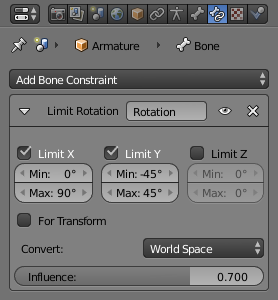

简介¶

姿势模式中的约束面板，一个限定位置约束应用于激活的骨骼。
由于骨骼行为像 姿态模式 中的物体，它们也可以被约束。这就是为什么 约束 选项卡显示在 对象模式 和 编辑模式 中。此面板包含 激活骨骼 的约束 （其名称显示在面板顶部，在 To Bone：... 静态文本字段中）。
约束骨骼可用于控制其姿态变换中的自由度，使用例如 限定 约束。你还可以使用约束来使骨骼跟踪另一个物体/骨骼（在同一个物体或另一个骨架内）等。参考 inverse kinematics feature 也主要可通过 IK解算器 约束获得，该约束特定的骨骼。
For example, a human elbow cannot rotate backward (unless the character has broken his arm), nor to the sides, and its forward and roll rotations are limited in a given range (for example, depending on the rest position of your elbow, it may be from (0 to 160) or from (-45 to 135).
所以你应该将 限定旋转 约束应用到前臂骨骼（因为肘部运动是围绕其首端旋转前臂骨骼的结果）。
在约束中使用骨骼，作为自身或目标，在 constraints pages 中详细讨论。